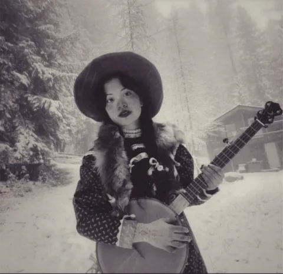
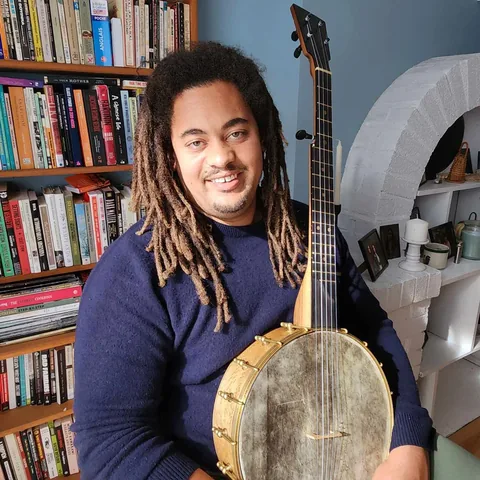
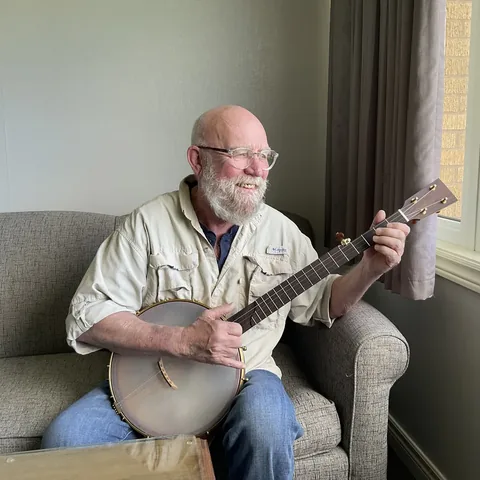
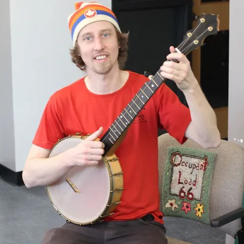
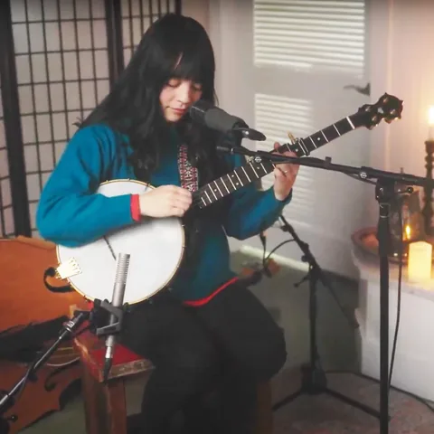
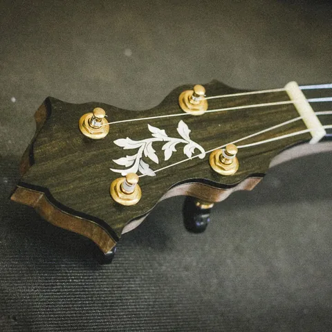
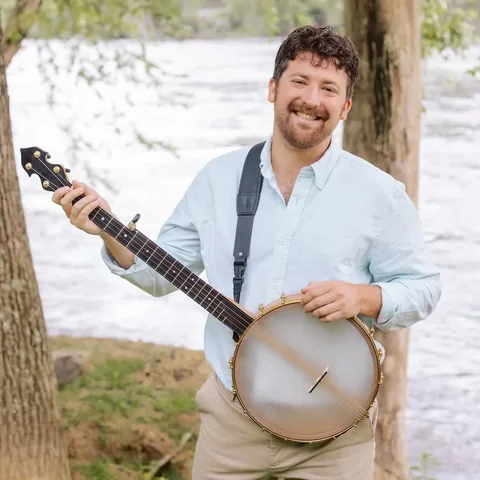
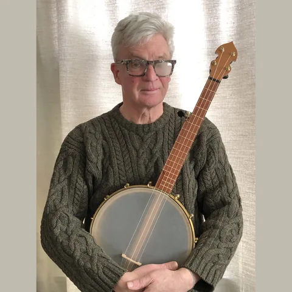
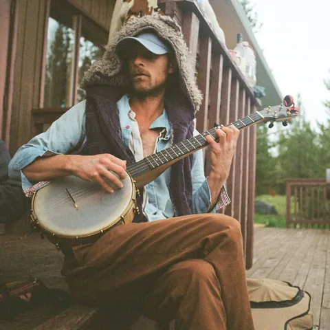

"Alex made me the most beautiful banjo I could have ever hoped for. From the very beginning, he was genuinely invested in the process and really listened, translating my ideas about tone, feel, and aesthetic into something even more beautiful and alive than I had imagined.
The instrument has a warmth and character that feels deeply personal, and every detail reflects the care and craftsmanship he puts into his work. This banjo is a piece of art and will be a lifelong instrument. I am so grateful for the care he put into bringing it to life and could not recommend working with him more highly."


"The banjo Alex built gets me excited to learn new techniques and develop more deeply as a player. By listening to what I wanted in a banjo and being willing to experiment with the design of the body, he created a truly unique instrument that I will be making music with for decades to come."
"I love this banjo, built by Alex. It's one of a kind. The quality of workmanship, sound, and tone are exactly what I was looking for. I also like that we kept the looks very simple, no flashiness. If it were a car, it would be what's known as a sleeper. I think a lot of the sound quality comes from the different woods Alex used in making it. A real masterpiece."


"Alex was very thoughtful and open as he built my banjo, asking for my input throughout the process and making me feel comfortable asking questions about details I wasn't familiar with.
The result was great! The banjo has a beautiful sound and is wonderful to play. My feelings about it are echoed by other players too — I've lent it out to several friends over the years, and it's sparked a lot of enthusiasm for his work."
"I love my little red banjo made by Alex. It brings forward sounds that are both earthy and bright, both punchy and smooth, and I find it easy to be expressive and playful on the instrument.
I had tried a few of Alex's banjos before this one and loved them all, so I was thrilled when he decided to build this one. We brainstormed the possibilities, and Alex helped me understand different design and build ideas so that we could shape my dream banjo together.
Throughout the process, Alex shared the creative journey with me. I got to witness a beautiful piece of art being made, and now I get to make music with that very piece. I'm truly grateful both for the experience and all the music to come from Little Red."


"Having a banjo built by Alex was a real treat. My partner and I both started playing tenor banjo a few years ago, and we were having trouble finding a decent tenor banjo in Nova Scotia, so we were excited when Alex built one.
He was open to our ideas about how we wanted it to look and feel. We even got to help choose the hardware and the inlay design on the head. We love the tone and playability of the instrument. It's an open-back 17-fret tenor banjo with a mellow, warm sound that suits us perfectly."
"Alex is a joy to work with, and I feel so lucky to be able to play his creation every day. My Fundy banjo is my most treasured possession. It sounds and looks beautiful, and makes me feel my most human every time I frail."


"When Alex and I set out on our build journey, I hoped for a travel banjo with sweet tone made from a bi-coastal blend of beautiful Canadian woods, something to play solo at the cabin or campfire, a banjo that would fit easily in the camper van or an overhead bin on a plane. I was ready for compromise, maybe having to tune higher due to the short scale, or having a quiet bass range.
Alex delivered all the beauty and craft yet genuinely astonished me with the sound. Folks are always surprised by the oomph of the “Mighty Mite.” It’s the size of a small tenor banjo, but the sound cuts through in a three-fiddle jam. I can tune down to Old F and the bass still growls."
"My fundy banjo has a lovely tone and is a pleasure to play. The headstock and fretboard are beautifully designed and made from a richly textured wood. Its a joy to have a one of a kind instrument crafted with such care and attention to detail."

"Alex helped bring my banjo back to life by fixing the neck and replacing the corroded strings with fresh ones. I really appreciated his attention to detail and efficiency — thanks again, Alex!"